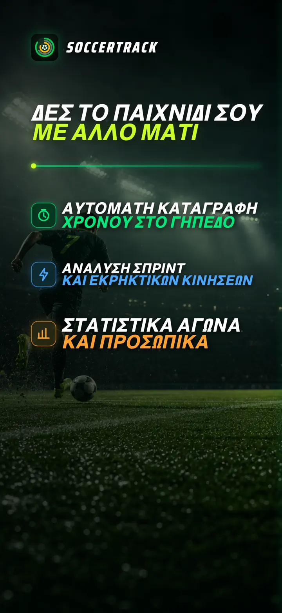
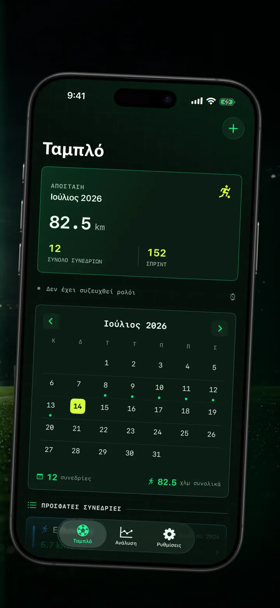
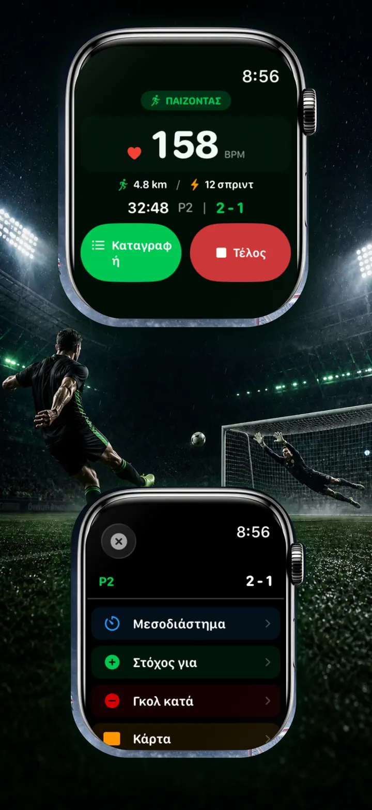
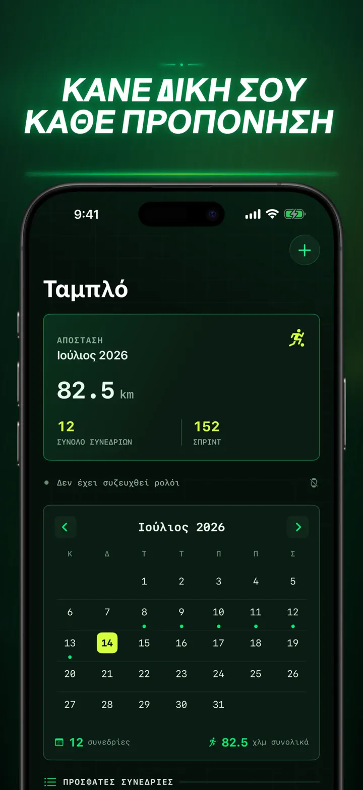
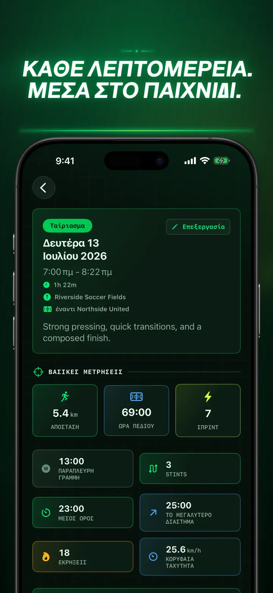
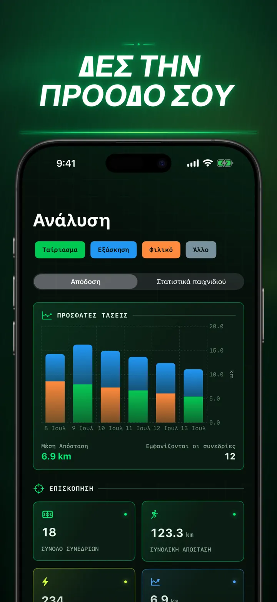
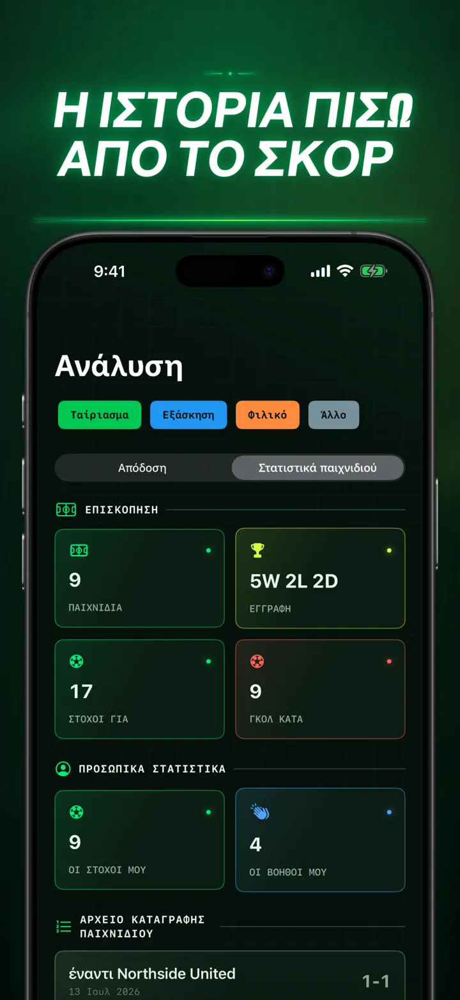
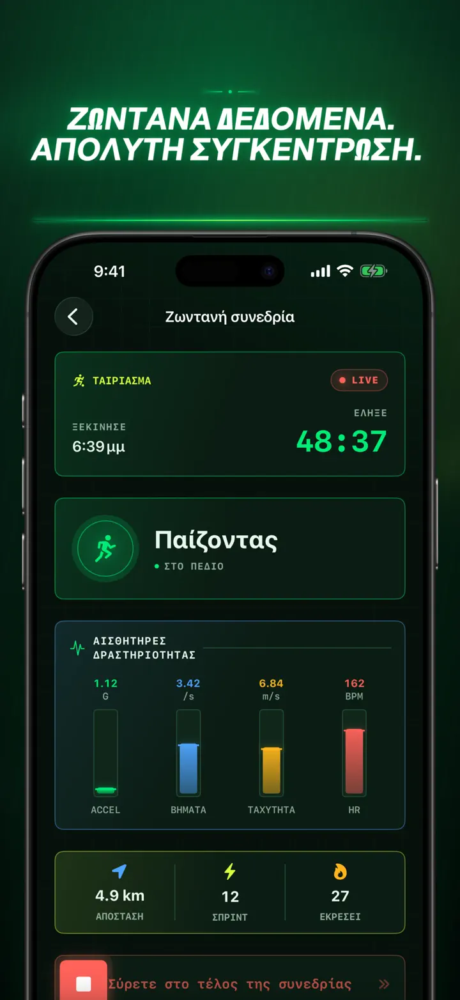
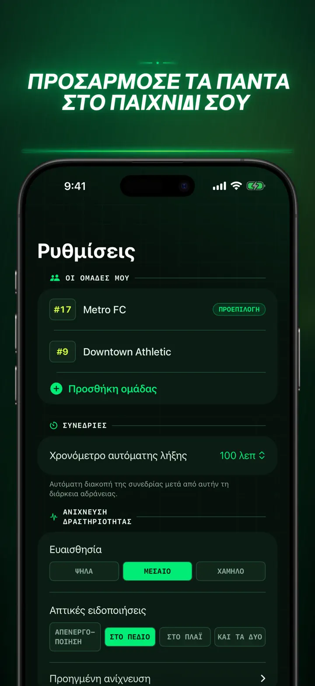
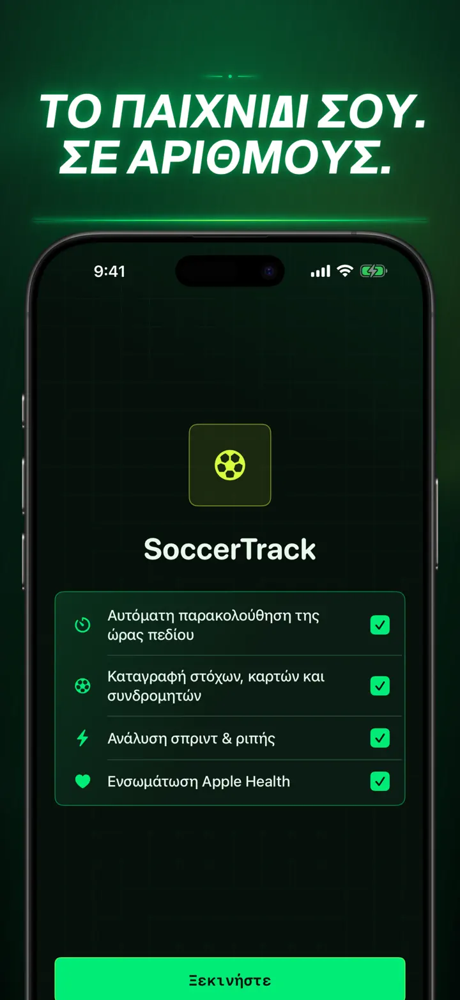

Soccer Time Track
Ποδόσφαιρο: χρόνος & ανάλυση
Ξεκινήστε μια προπόνηση και παίξτε. Το Apple Watch ξεχωρίζει αυτόματα χρόνο γηπέδου και πάγκου και καταγράφει ζωντανά δεδομένα, σπριντ και γεγονότα.
Λήψη από το App Store
Σχετικά με την εφαρμογή
Δείτε τον αγώνα σας αλλιώς.
Το Soccer Time Track μετατρέπει το Apple Watch σε βοηθό αγώνα για παίκτες που θέλουν να καταλάβουν περισσότερα από το τελικό σκορ. Ξεκινήστε από τον καρπό, μείνετε συγκεντρωμένοι στο παιχνίδι και έπειτα δείτε στο iPhone μια λεπτομερή εικόνα της απόδοσής σας.
ΑΥΤΟΜΑΤΟΣ ΧΡΟΝΟΣ ΣΤΟ ΓΗΠΕΔΟ
Μάθετε πότε ήσασταν πραγματικά στη δράση. Τα σήματα κίνησης, προπόνησης και τοποθεσίας βοηθούν να ξεχωρίζουν το παιχνίδι, η χαμηλή δραστηριότητα και ο χρόνος στον πάγκο. Θα έχετε:
- Χρόνο στο γήπεδο και στον πάγκο
- Διαστήματα παιχνιδιού και καθαρό χρονολόγιο
- Λεπτομερή ανάλυση ολόκληρης της προπόνησης
Ο ΑΓΩΝΑΣ ΑΠΟ ΤΟΝ ΚΑΡΠΟ
Επιλέξτε Αγώνας, Προπόνηση, Φιλικό ή Άλλο. Κατά τη διάρκεια καταγράψτε:
- Γκολ υπέρ και κατά
- Τα δικά σας γκολ και ασίστ
- Κίτρινες και κόκκινες κάρτες
- Αλλαγές παικτών και περιόδων
Η ΑΠΟΔΟΣΗ ΣΑΣ ΣΕ ΑΡΙΘΜΟΥΣ
Πηγαίνετε πέρα από τα λεπτά με στοιχεία όπως:
- Απόσταση
- Μέση και μέγιστη ταχύτητα
- Σπριντ και εκρήξεις υψηλής έντασης
- Καρδιακοί παλμοί και ενεργές θερμίδες
- Ρυθμός βημάτων και επιτάχυνση
ΖΩΝΤΑΝΑ ΔΕΔΟΜΕΝΑ, ΠΛΗΡΗΣ ΣΥΓΚΕΝΤΡΩΣΗ
Ένα ζευγοποιημένο iPhone μπορεί να δείχνει ζωντανές μετρήσεις ενώ το Apple Watch συνεχίζει την προπόνηση. Εσείς μένετε στον αγώνα και τα δεδομένα καταγράφονται στο παρασκήνιο.
ΔΕΙΤΕ ΤΗΝ ΠΡΟΟΔΟ ΣΑΣ
Κρατήστε αγώνες, προπονήσεις, φιλικά και άλλες συνεδρίες σε ένα ιστορικό. Εξερευνήστε τάσεις και προσωπικά ρεκόρ, συγκρίνετε αποδόσεις και προσθέστε ομάδα, αριθμό φανέλας, αντίπαλο, τοποθεσία και σημειώσεις για να διατηρήσετε την ιστορία κάθε αποτελέσματος.
Χρειάζεστε τα δεδομένα αλλού; Εξαγάγετε συνεδρίες, διαστήματα παιχνιδιού και γεγονότα αγώνα σε CSV ή JSON.
ΓΙΑ APPLE WATCH ΚΑΙ APPLE HEALTH
Με την άδειά σας, το Soccer Time Track χρησιμοποιεί δεδομένα προπόνησης, καρδιακών παλμών, κίνησης και τοποθεσίας για αναλύσεις και αποθηκεύει ολοκληρωμένες προπονήσεις ποδοσφαίρου στο Apple Health. Η αυτόματη παρακολούθηση απαιτεί Apple Watch. Μπορείτε επίσης να προσθέσετε συνεδρία χειροκίνητα στο iPhone.
ΤΑ ΔΕΔΟΜΕΝΑ ΣΑΣ, Ο ΑΓΩΝΑΣ ΣΑΣ
Οι συνεδρίες μένουν στις συσκευές σας και, με ενεργό συγχρονισμό iCloud, στην ιδιωτική σας βάση iCloud. Το Soccer Time Track δεν απαιτεί λογαριασμό, δεν έχει διαφημίσεις και δεν χρησιμοποιεί αναλύσεις τρίτων.
Σταματήστε να μαντεύετε πόσο παίξατε. Δείτε τι κάνατε με τον χρόνο σας.
Πολιτική απορρήτου: https://masawata.net/SoccerTimeTrack/privacy-policy.html Όροι υπηρεσίας: https://www.apple.com/legal/internet-services/itunes/dev/stdeula/
Στιγμιότυπα οθόνης









Soccer Time Track
Ξεκινήστε μια προπόνηση και παίξτε. Το Apple Watch ξεχωρίζει αυτόματα χρόνο γηπέδου και πάγκου και καταγράφει ζωντανά δεδομένα, σπριντ και γεγονότα.
Λήψη από το App Store